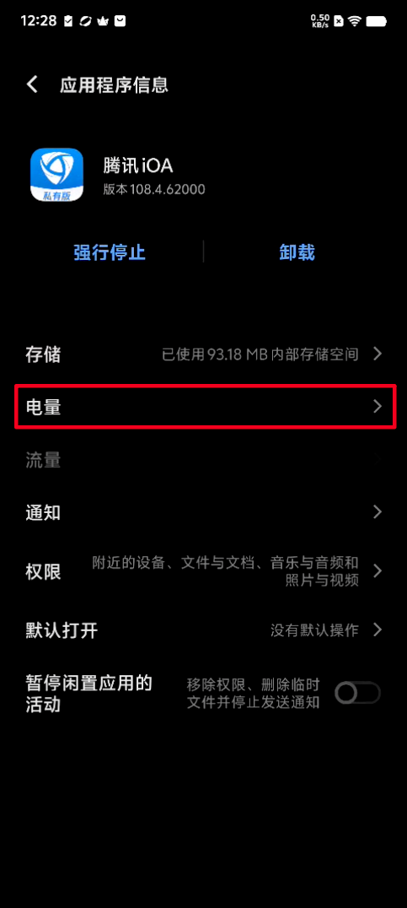
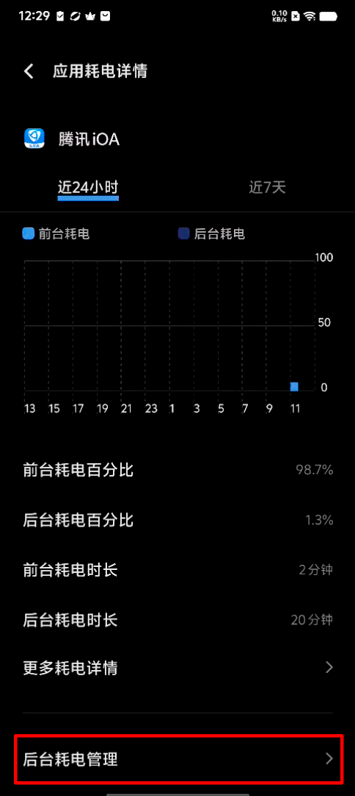
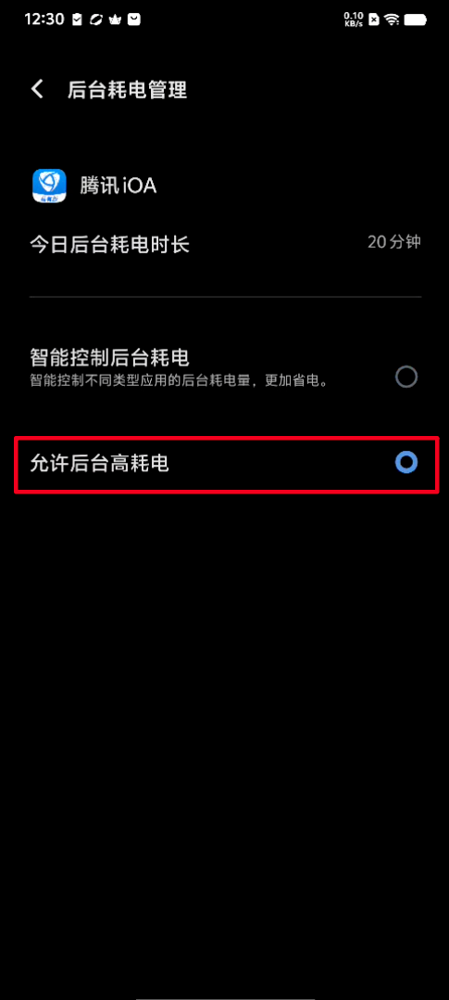
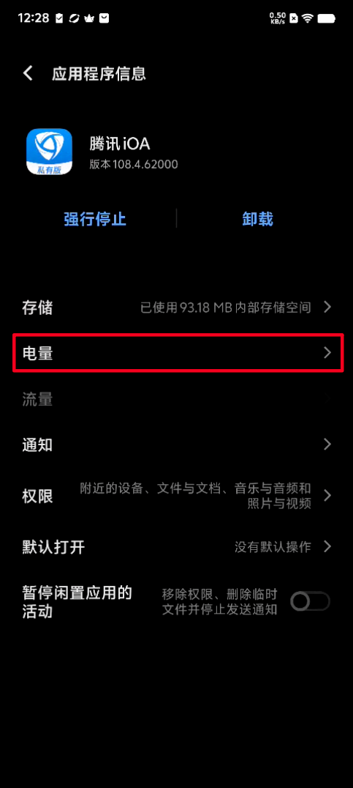
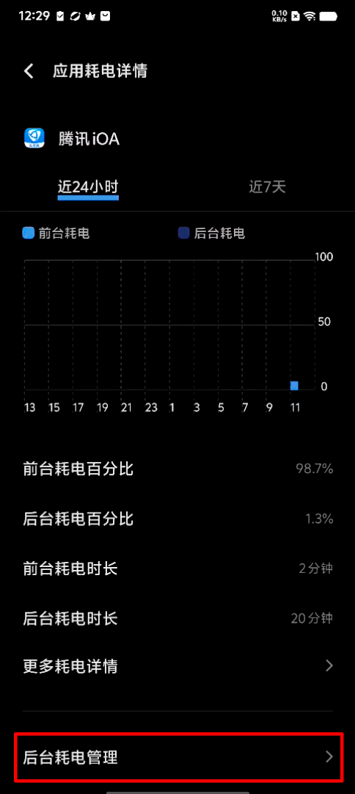
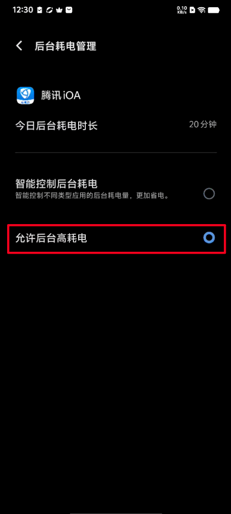
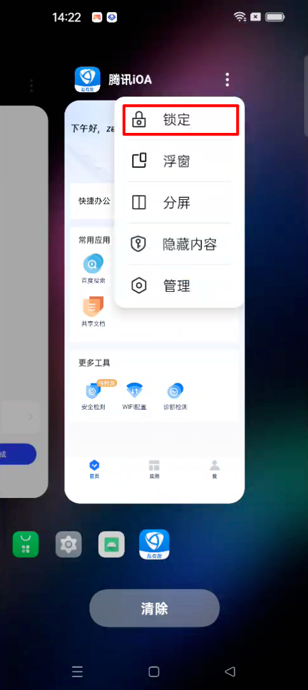
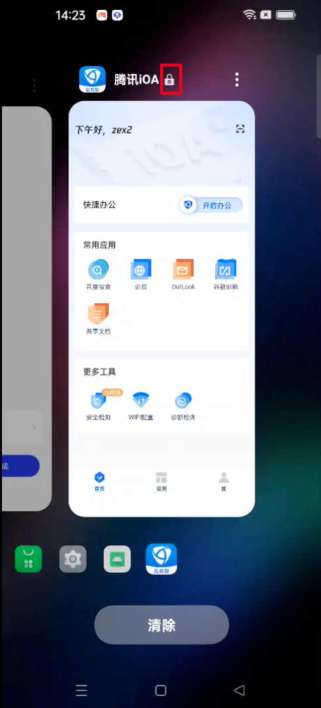
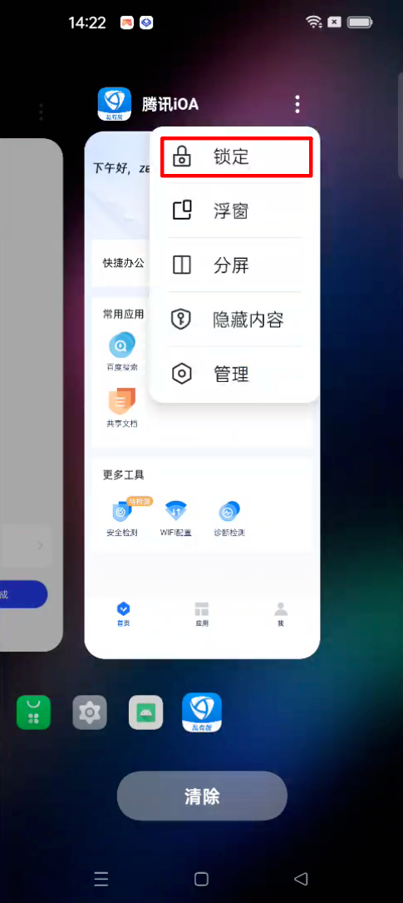
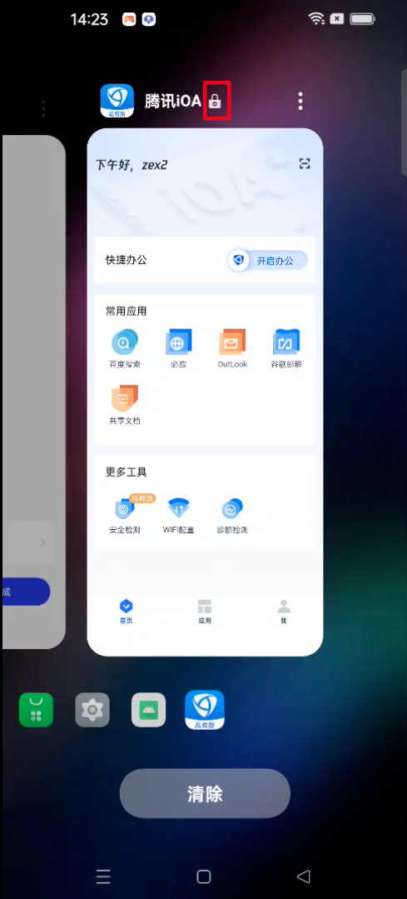

一、说明
由于安卓系统具有内存自动回收策略和应用省电策略，应用退到后台长时间静置后，系统会采用优化策略回收应用进程。
具体到iOA，退到后台后，可能会出现进程被回收、或者进程被挂起，导致无法正常工作。
因此建议进行以下设置，尽可能地保持iOA的后台运行。但是，即使进行了以下设置，系统仍有可能对iOA应用进行回收，iOA进程被回收后手动点击iOA图标重新拉起App/开启快捷办公后可继续正常使用。
不同厂商的手机或者不同的系统版本，可能设置会存在差异，此文档仅供参考。
二、华为手机（鸿蒙3.0/4.0系统）如何设置应用后台运行
1、【锁定后台任务】（防杀）
打开iOA界面后——返回桌面——从屏幕底部上滑从屏幕底部向上滑动（有导航栏的点击多任务按钮）——进入多任务页面 ——找到iOA轻轻下滑停顿——右上角出现锁定标志表示锁定成功。

锁定后，可避免点击  时清理iOA。
时清理iOA。
但需注意的是，如果单独拖动多任务页面中的iOA窗口并上滑，仍会清理掉iOA。
2、关闭【省电模式】并运行应用【后台运行】
（2.1）打开华为手机管家——电池——关闭【省电模式】/关闭【超级省电】（如有打开）。


（2.2）华为手机管家——应用启动管理——找到iOA并点击——【自动管理】开关设置为关，【允许后台活动】设置为开，【允许自启动】/【允许关联启动】亦建议设置为开。


三、小米手机（MIUI 14）如何设置应用后台运行
1、【锁定后台任务】（防杀）
打开iOA界面后——返回桌面——从屏幕底部上滑从屏幕底部向上滑动（有导航栏的点击多任务按钮）——进入后台任务页面 ——找到iOA长按——点击锁图标——顶部出现锁定标志表示锁定成功。


2、【关闭内存拓展】
该功能开启后，系统会额外提供3GB的运行内存。
虽然官方并没有指出内存拓展有明确的杀后台现象，但是根据各位网友的反馈，该功能在关闭后，杀后台的现象少了很多，严重怀疑后台进程是不是都是保存在内存拓展的运行内存当中。
打开系统设置——更多设置——内存拓展——关闭【内存拓展】并重启设备


3、【应用管理】不限制后台运行
桌面长按iOA图标——进入应用信息——电量与性能——电池用量页面中修改为无限制


4、【省电设置】
小米手机管家——省电与电池——右上角设置


（1）锁屏后清理内存设置“从不”
（2）应用智能省电——iOA——后台配置改为无限制


四、vivo手机（OriginOS 4）如何设置应用后台运行
1、【锁定后台任务】（防杀）
打开iOA界面后——返回桌面——从屏幕底部上滑从屏幕底部向上滑动（有导航栏的点击多任务按钮）——进入多任务页面——找到iOA轻轻下滑停顿——右上角出现锁定标志表示锁定成功。
锁定后，可避免点击  时清理iOA。
时清理iOA。
但需注意的是，如果单独拖动多任务页面中的iOA窗口并上滑，仍会清理掉iOA。
2、关闭【省电模式】
打开 i 管家——实用工具——电池管理—— 切换到均衡模式或 Monster 模式 / 关闭【超级省电】（如有打开）
3、【后台耗电管理】
设置——应用——应用管理——找到iOA并点击——电量——后台耗电管理——选择【允许后台高耗电】


 





4、【后台启动】
设置——应用——应用管理——找到iOA并点击——权限——所有权限——打开【自启动】，亦建议打开【关联启动】
五、oppo手机（ColorOS 14）如何设置应用后台运行
1、【锁定后台任务】（防杀）
打开iOA界面后——返回桌面——从屏幕底部上滑从屏幕底部向上滑动（有导航栏的点击多任务按钮）——进入多任务页面 ——点击三个小点——点击锁定——右上角出现锁定标志表示锁定成功。
 



锁定后，可避免点击【清除】时清理iOA。
但需注意的是，如果单独拖动多任务页面中的iOA窗口并上滑，仍会清理掉iOA。
2、关闭【省电模式】
打开设置——电池——省电模式——关闭【省电模式】 / 关闭【超级省电模式】（如有打开）
3、【允许后台运行】
手机管家——应用管理——所有应用——找到iOA并点击——耗电管理——开启【允许唤醒前台】【允许完全后台行为】【允许应用自启动】【允许应 用关联启动】